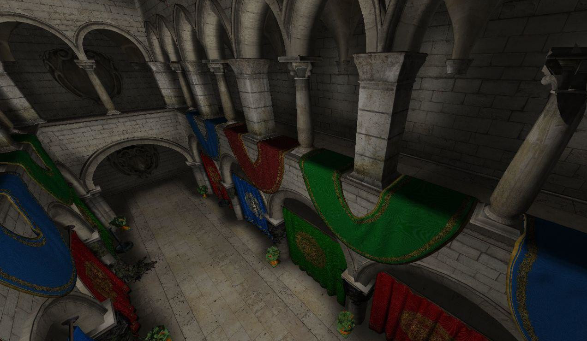
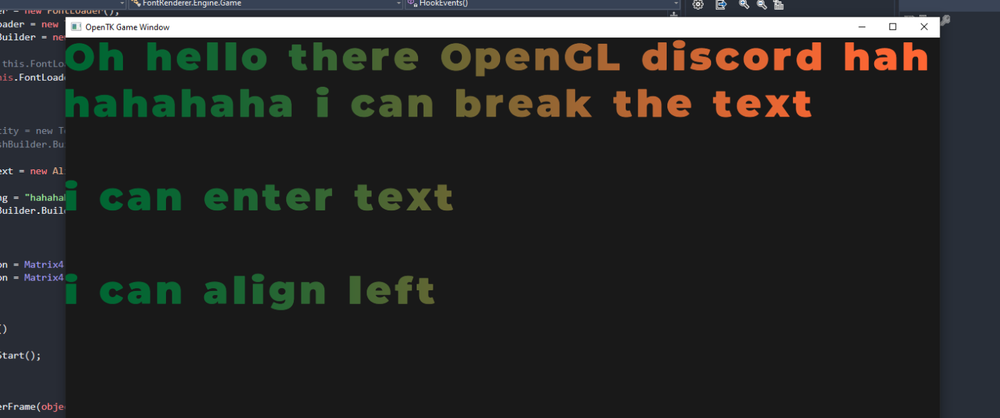
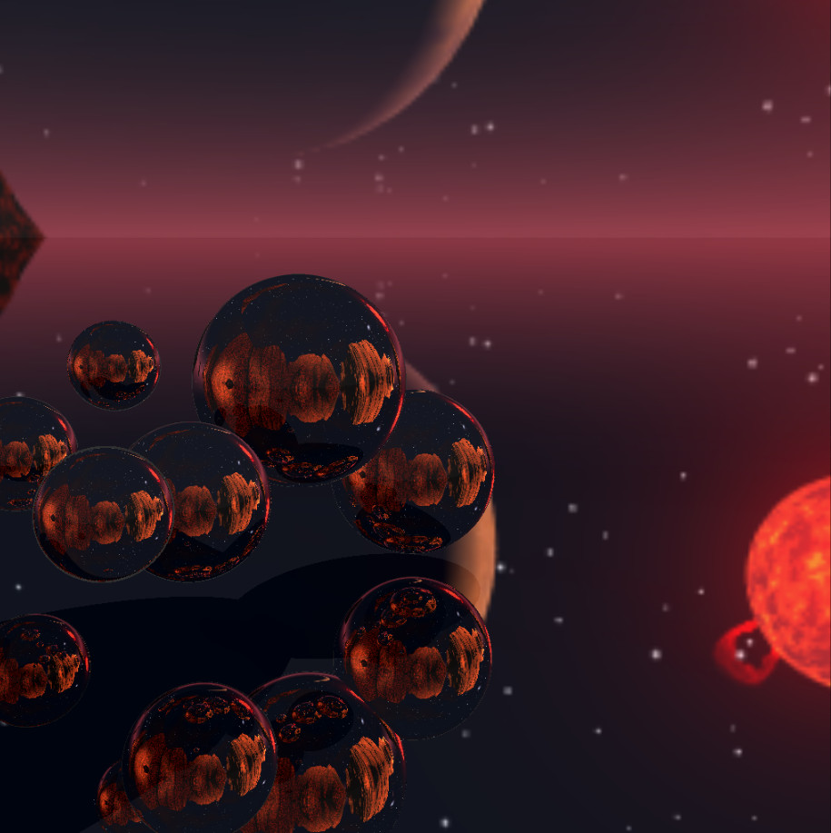
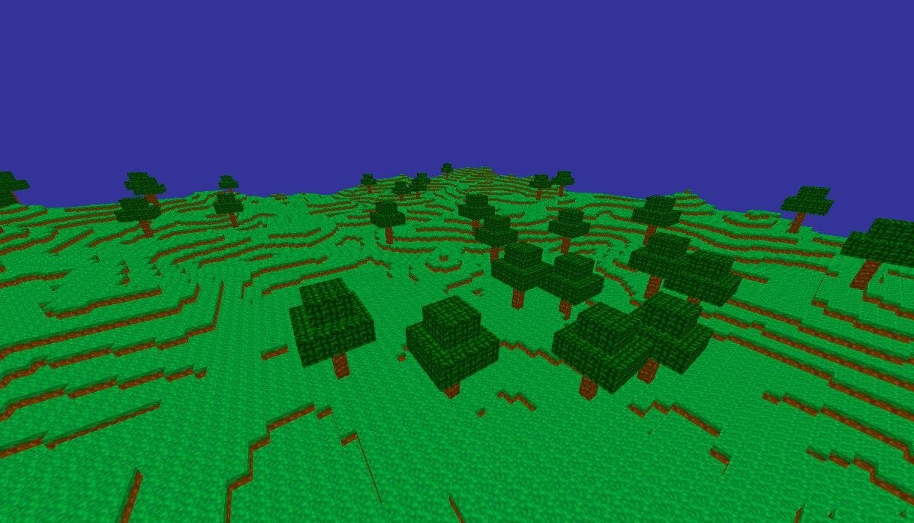

Explore variety of my projects
You can find most of my projects on GitHub!
VXGI
Implementation of voxel-cone tracing with global illumination in C# with OpenTK bindings, currently working on, full implementation of GLSL shader code. Not open-source yet...

More info
Sharp-font
OpenTK SDF font-renderer, C# library for rendering fonts in OpenGL (OpenTK), using SDF (signed distance fields) generated by HIERO. Available on my GitHub...

More info
Sharp-tracing
Realtime toy-raytracer done in C# OpenTK low level bindings for OpenGL, open-source on my GitHub, made specially for learning purpose.

More info
Majdacraft
C# OpenTK Minecraft clone, made opensource with future-proof strucutre in mind, not available yet, may finish soon...

More info